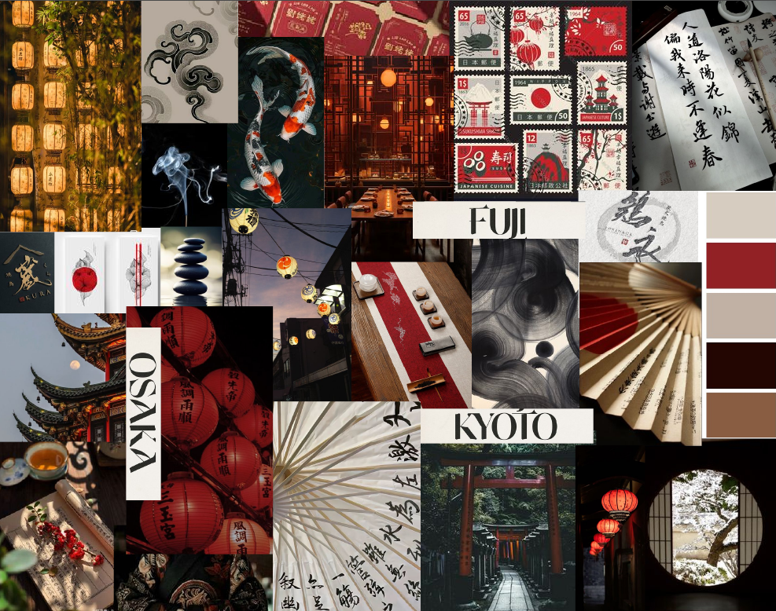
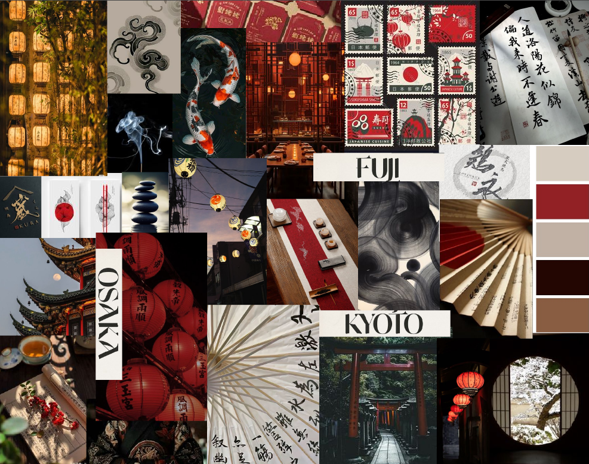

I created the visual identity for Zenpuku Ramen, a Japanese restaurant inspired by simplicity and elegance. The project included the design of a unique logo that fuses traditional elements such as ramen and modern Japanese patterns, using Adobe Illustrator. In addition, I developed a complete visual concept with a warm color palette and minimalist typography to convey authenticity and modernity. #branding #graphic design
ARI
ZENPUKU RAMEN
 
